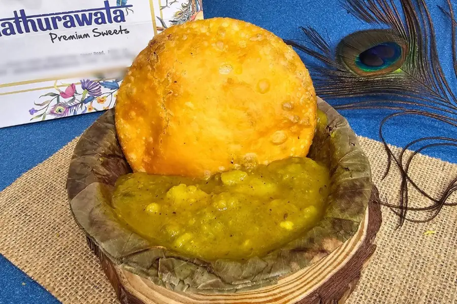
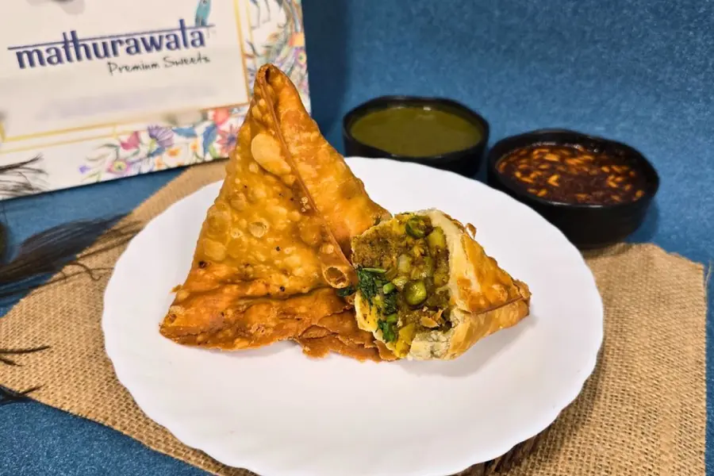
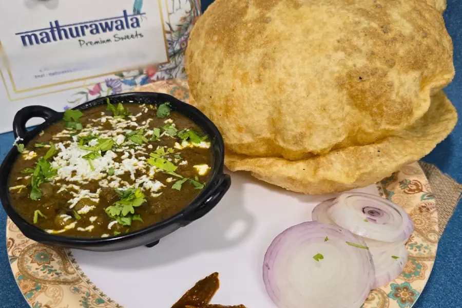
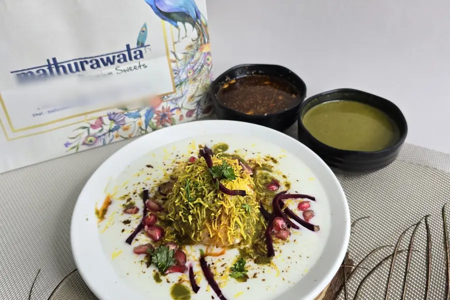
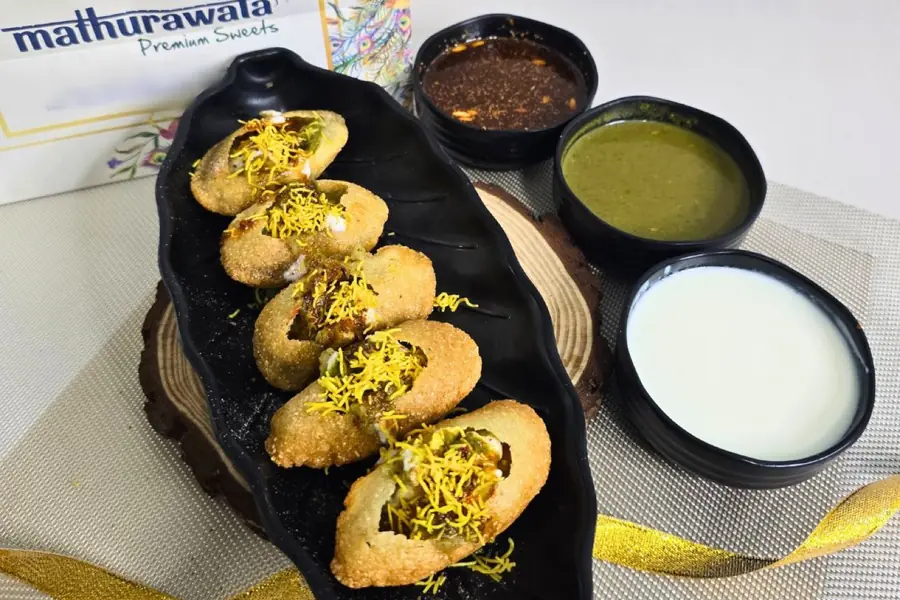
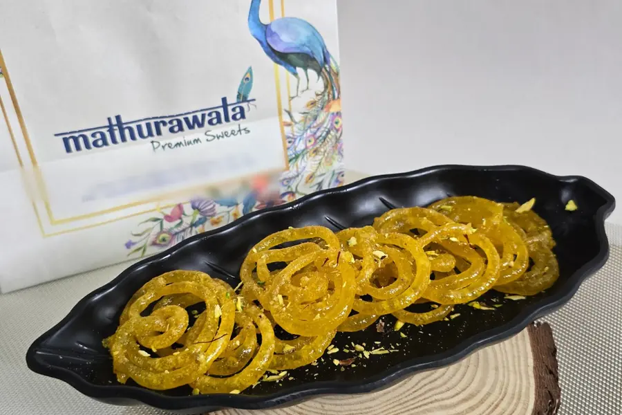
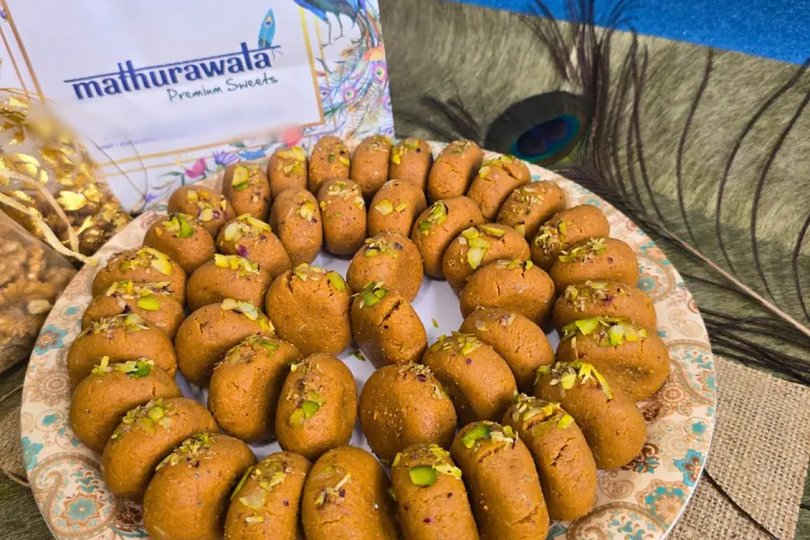
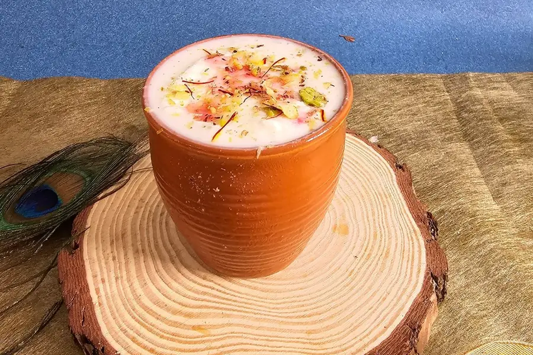

Combos
Counter combos at the Baner shop.
Kaleu (Nashta)
₹99Kachori sabji, jalebi and special chai.
Chole Bhature Wala Bhojan
₹1992 bhature with chole, and a kulhad lassi.
Braj BhogDine-in
₹339Kachori sabji, bedai sabji, masala poori sabji, kulhad lassi and rabdi jalebi.
Kachori Wala

Mathura Ki Kachori Sabji
₹351 pc. Break the kachori into the aloo sabji, let it soak a few seconds, then eat. The breakfast Mathura wakes up to, every single day.
Mathura Ki Bedai Sabji
₹35Kadhi Kachori1 pc
₹35Our crisp kachori drowned in hot, tangy kadhi instead of sabji. The golden crust holds for a moment, then soaks it all in. Braj comfort in one bowl.
Moong Dal Kachori
₹251 pc. Fried slow till the shell turns deep golden and shatters the moment you press it. Inside, moong dal ground with saunf and hing, still soft and steaming. Eaten the Braj way, with sweet saunth and green chutney.
Jodhpuri Pyaz Kachori
₹301 pc. Onion and potato cooked down with thick masala, packed into a flaky shell and fried till it is deep gold and too hot to hold. A Rajasthani classic that Braj made its own.
Bedai
₹251 pc. Mathura bedai, crisp and puffed golden. Best with our Hing Aloo Jhol. Urad dal packed into the dough and fried till it balloons, a Mathura morning staple.
Extra Kadhi
₹20Extra Sabji (Hing Jhol)
₹20
Samosa Wala

Aloo Samosa
₹25Sabji Samosa
₹351 pc. Our hot aloo samosa with a bowl of aloo sabji to break it into, so the crust soaks up the gravy at the edges and stays crisp in the middle.
Kadhi Samosa1 pc
₹35A hot aloo samosa cracked open and flooded with tangy kadhi. Crisp at the edges, soft in the middle, gone in minutes.
Aloo Pyaz Samosa1 pc
₹30Aloo Pyaz Sabji Samosa
₹40Chole Samosa Chaat
₹70Dahi Samosa Chaat
₹60Our aloo samosa broken open and covered with thick dahi, sweet saunth, green chutney and masala. The Mathura way of turning a samosa into chaat.
Chole Bhature, Kulche aur Poori

Chole Bhature2 bhature
₹140Chole Kulche2 pcs
₹140Matar Kulche2 pcs
₹140Masala Poori Sabji4 pcs
₹110Extra Bhatura1 pc
₹40Extra Kulcha1 pc
₹40One more soft kulcha to mop up the last of your chole or matar.
Chaat Wala

Raj Kachori
₹100The king of chaat. A big crisp kachori cracked open and filled with dal, thick dahi, sweet saunth, green chutney and our masala. Braj runs on milk and curd, and this is its chaat at its fullest.
Dahi Wada / Dahi Bhalla
₹90Dahi Bhalla Papdi
₹110Aligarh Ke Barule
₹70Another gem from the streets of Aligarh, right next door to Braj. Crisp barule served as a chaat with dahi, chutneys and masala.
Chole Kachori Chaat
₹70Dahi Kachori Chaat
₹60Our crisp kachori broken open and covered with thick dahi, sweet saunth, green chutney and masala. The Mathura way of turning a kachori into chaat.
Dahi Papri Chaat
₹90
Paani Poori aur Bhalla
From 4 PM.

Sooji Paani Poori (Heeng)6 pcs
₹50Crisp handmade pooris, atta or sooji, with our tangy paani of mint, rock salt and hing. The sooji pooris carry a pinch of hing from Hathras. Fill, dip and eat in one go.
Atta Paani Poori6 pcs
₹40Crisp handmade atta pooris with our tangy paani of mint, rock salt and hing. Fill, dip and eat in one go.
Bhalla (Aloo Tikki)
₹90Aloo tikki shallow fried in desi ghee till it turns deep golden and the crust crisps right through, then loaded with matar, thick curd and our chutneys. The evening street food of the temple lanes of Braj.
Atta Dahi Poori5 pcs
₹60Crisp handmade atta pooris loaded with thick dahi, sweet saunth and green chutney. Cold curd, a crisp shell and sweet and sour chutney in every bite.
Atta Sev Poori5 pcs
₹50Atta SPDP5 pcs
₹70Sooji Dahi Poori5 pcs
₹70Handmade sooji pooris made with a pinch of hing from Hathras, loaded with thick dahi, sweet saunth and green chutney. Cold curd, a crisp shell and sweet and sour chutney in every bite.
Sooji Sev Poori5 pcs
₹60Sooji SPDP5 pcs
₹80
Jalebi aur Rabdi

Jalebi (Desi Ghee)
- 100 g₹60
- 1 kg₹600
Rabdi Jalebi
₹140Hot desi ghee jalebi with thick, chilled kesar rabdi. Dip, bite, repeat. Hot and cold, crisp and creamy, the Mathura way to end a meal.
Special Kesar Rabdi
Yeh toh hai hi humari shaan. Full cream milk simmered for hours in a wide kadhai till it thickens into layers of malai, finished with kesar. The rabdi Mathura is known for.
- 100 g₹80
- 1 kg₹700
Mithai Wala
Per kg prices are billed by weight at the counter.

Mathura Ka Peda1 kg
₹700Khoya Peda White (Desi Ghee)1 kg
₹700Kaju Katli1 kg
₹1,300Desi Ghee Besan Laddu1 kg
₹700Motichur Laddu (Desi Ghee)1 kg
₹700Desi Kalakand1 kg
₹800Khoya Gujiya (Desi Ghee)
- 1 pc₹35
- 1 kg₹600
Gulab Jamun
- 1 pc₹40
- 1 kg₹700
Kala Jamun
- 1 pc₹45
- 1 kg₹800
Kesar Dryfruit Ghewar (Desi Ghee)1 kg
₹1,200Kesar Rasmalai1 kg
₹700Malai Ghewar1 kg
₹1,000Malpua (Desi Ghee)
- 100 g₹80
- 1 kg₹700
Mawa Barfi1 kg
₹600Moong Dal Halwa
- 100 g₹90
- 1 kg₹800
Rasmalai100 g
₹80Special Sponge (Rasgulla)1 pc
₹35
Lassi, Chaas aur Chai

Kulhad Lassi250 ml
₹70Lassi (Large)500 ml
₹120Masala Lassi
- 250 ml₹70
- 500 ml₹120
Masala Chaas
Curd churned thin and sharpened with roasted jeera and black salt, served properly cold. What Braj reaches for after a hot day.
- 250 ml₹45
- 500 ml₹80
Desi Chai
₹20Water Bottle
- Small₹10
- Big₹20
Thali aur Meals
Roti Sabzi Thali (3 Roti + Aloo Tamatar Sabji)
₹99Three soft rotis straight off the tawa with a bowl of aloo tamatar sabji, potatoes simmered in tomato till the gravy turns glossy. Simple, filling and homely.
1 Plain Paratha + Dal Fry + Rice
₹1292 Roti + Dal Fry + Rice
₹129Two soft tawa rotis, a bowl of dal fry and steamed rice. The simple, filling plate a Mathura home sits down to in the afternoon.
Roti Sabzi Dal Chawal Thali (2 Roti + Aloo Tamatar Sabji + Dal Fry + Rice)
₹149Two soft rotis, aloo tamatar sabji, dal fry and hot rice on one plate. The full afternoon meal, the way it lands on the table at home in Mathura.
1 Plain Paratha + Dal Fry + Rice + Raita + Sweet
₹179One plain paratha, dal fry, steamed rice, raita and a sweet to finish. Inspired by the traditional Mathura household meal: dal, rice, paratha, raita, and a sweet to complete the plate.
Choice Of Any Paratha + Chole / Rajma / Dal / Kadhi + Rice
₹179One paratha of your choice (aloo, aloo pyaz, gobi, methi or mix) with chole, rajma, dal or kadhi and steamed rice. A full plate, built the way a Mathura household lunch is.
2 Roti + Dal Fry + Rice + Raita + Sweet
₹179Two soft tawa rotis, dal fry, steamed rice, raita and a sweet to finish. Inspired by the traditional Mathura household meal, with a sweet to complete the plate.
1 Paneer Paratha + Chole / Rajma / Dal / Dal Makhni + Rice
₹199Choice Of Any Paratha + Chole / Rajma / Dal / Kadhi + Rice + Raita + Sweet
₹209One paratha of your choice (aloo, aloo pyaz, gobi, methi or mix) with chole, rajma, dal or kadhi and steamed rice, and a sweet to finish. A full plate, built the way a Mathura household lunch is.
1 Paneer Paratha + Chole / Rajma / Dal / Dal Makhni + Rice + Raita + Sweet
₹239Raita
₹40
Dal aur Sabzi
Chole
₹119Bold chole simmered slowly till the masala turns thick and dark, the Dilli way. Made for bhature and kulche.
Dal Fry
₹99Dal Makhni
₹149Dal Tadka
₹119Dal finished with a bold tadka of ghee and red chilli, the way UP dhabas serve it. The everyday dal of Mathura homes.
Kadhi Pakora
₹119Rajma
₹119Aloo Tamatar Sabji250 to 300 ml
₹79Potatoes broken in by hand and simmered in tomato till the gravy turns glossy and thick, the way Mathura homes make it. Perfect with roti, paratha or poori.
Dal Chawal
Chole Chawal
₹149Dal Fry Rice / Dal Fry Chawal
₹129Dal Khichdi
₹129Soft dal khichdi, light and easy on the stomach, the way it is made at home.
Dal Khichdi Tadka
₹149Dal Makhni Rice / Dal Makhni Chawal
₹179Dal Tadka Rice / Dal Tadka Chawal
₹149Kadhi Pakoda Rice / Kadhi Chawal
₹129Rajma Rice / Rajma Chawal
₹149Plain Rice
₹79
Parathe aur Roti
Aloo Paratha
₹99Aloo Pyaz Paratha
₹99Gobi Paratha
₹99Fresh cauliflower paratha seasoned with our house masala and cooked on the tawa till golden. A winter favourite across Braj.
Methi Paratha
₹99Mix Paratha
₹99Paneer Paratha
₹129Plain Paratha
₹40Butter Roti / Chapati
₹25Roti / Chapati
₹18
Snacks
Khaman Dhokla
- 100 g₹40
- 1 kg₹400
Moong Dal Bhajiya (Mangodi)
₹50
Namkeen aur Mathri
Per kg prices are billed by weight at the counter.
Jeera Mathri1 kg
₹400Flaky mathri with whole jeera through the dough, fried slow till crisp. Earthy, salty and made for hot chai.
Methi Mathri1 kg
₹400Flaky mathri with dried methi leaves worked into the dough, fried slow till crisp. Slightly bitter, nicely salty, and made for hot chai.
Namkeen Mathri1 kg
₹400Flaky, layered mathri, fried slow till crisp right through and lightly salted. Made for dunking in hot chai, the North Indian way.
Namkeen Mathri (Kali Mirch)1 kg
₹400Flaky, layered mathri with crushed kali mirch in the dough, fried slow till crisp right through. A peppery bite made for hot chai.
Namkeen Pare1 kg
₹400Crisp, lightly salted namak pare, fried slow till they snap clean. The chai time munch every North Indian home keeps a dabba of.
Shakkar Pare1 kg
₹400Crisp shakkar pare with a thin sugar coat that cracks as you bite. The sweet, crunchy chai time snack straight out of the North Indian festive dabba.